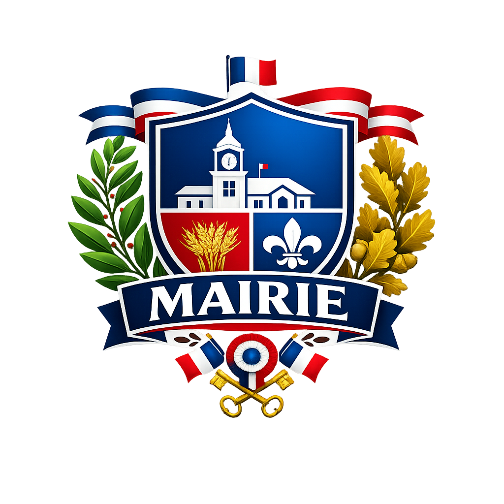
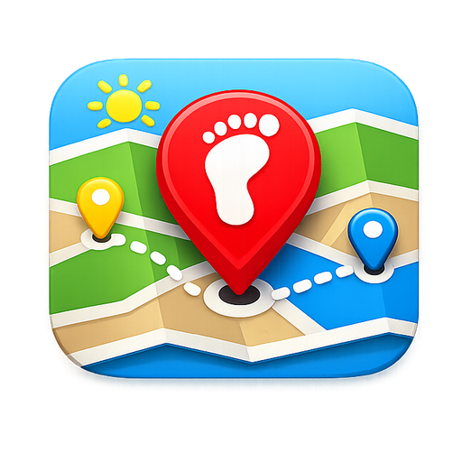

À propos de moi
Mon Parcours
À 36 ans, après plusieurs années comme technicien de maintenance, j’ai choisi de me reconvertir dans l’informatique. Mon expérience m’a appris la rigueur, l’analyse et la résolution méthodique de problèmes complexes.
Actuellement en formation de développeur full stack, je développe des compétences en programmation et technologies web, avec un intérêt particulier pour la cybersécurité. La sécurisation des systèmes, des applications et des données est un domaine qui m’attire particulièrement. Curieux et autonome, je continue d’approfondir mes connaissances à travers des projets personnels et une veille technique active. Je recherche une alternance afin de mettre en pratique mes compétences et contribuer à des projets concrets.
Langages & Outils
Savoir-être
Mes Réalisations

Portail Communal
Développement d'un site vitrine pour une mairie, optimisé pour l'accessibilité et la gestion simplifiée des actualités locales via WordPress.
RideUp
Application communautaire pour les passionnés de moto. Tissez des liens, organisez des sorties en groupe et partagez votre passion de la route.
